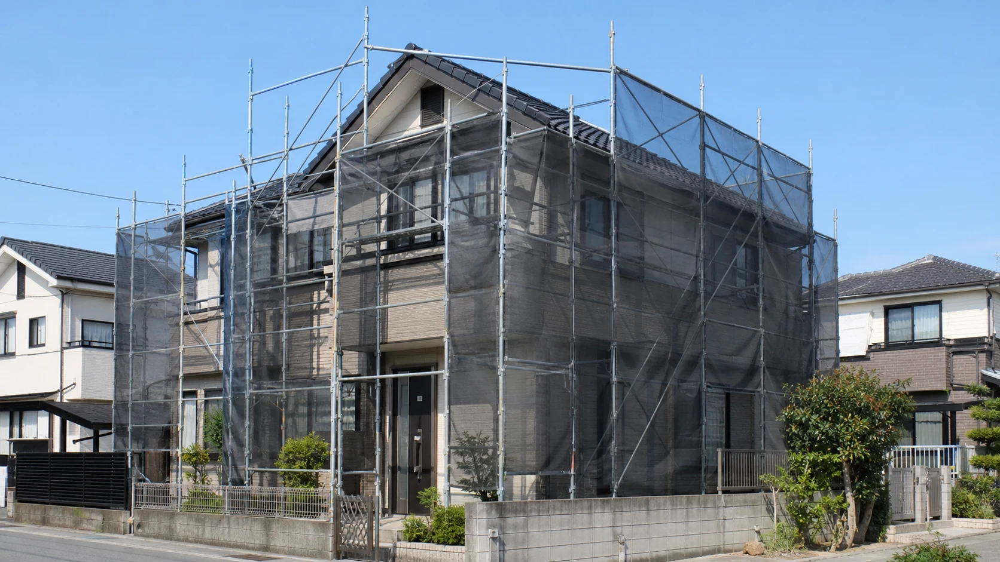

「この染み、前からあっただろうか」。窓辺を拭いたとき、天井を見上げたとき、家の小さな変化に気づくことがあります。すぐに大きな工事が必要とは限りませんが、気になりながら忘れてしまうと、次に見つけたときに変化を比べられません。
家の点検は、住む人が建物の専門家になるためのものではありません。普段との違いを見つけ、安全に記録し、必要なときに専門家へ渡すための習慣です。屋根に上がらなくてもできることから、家を長く使うための見方を整理します。
屋根・外壁・窓・給湯・換気・排水の変化を、安全に確認して記録する方法。住む人と専門家の役割を分けて紹介します。
公開予定日：2026年10月29日
維持管理・点検
「この染み、前からあっただろうか」。窓辺を拭いたとき、天井を見上げたとき、家の小さな変化に気づくことがあります。すぐに大きな工事が必要とは限りませんが、気になりながら忘れてしまうと、次に見つけたときに変化を比べられません。
家の点検は、住む人が建物の専門家になるためのものではありません。普段との違いを見つけ、安全に記録し、必要なときに専門家へ渡すための習慣です。屋根に上がらなくてもできることから、家を長く使うための見方を整理します。
点検と聞いて、屋根や床下をのぞかなければと思う必要はありません。屋根、はしごが必要な場所、狭い床下、電気やガスの設備内部は、慣れていない人が入ったり分解したりする場所ではありません。地上や室内の安定した位置から見える範囲にとどめます。
たとえば雨が上がった後に、天井の染みや窓まわりの水跡を見る。洗面台の下を片づける際に、水のにじみや以前と違うにおいがないか気にかける。戸を開け閉めするときに、引っ掛かりが変わっていないか確かめる。日常の動作に組み込むと続けやすくなります。
ひびがあるから危険、染みがあるから雨漏り、と外観だけで断定はできません。変化の場所と時期を伝えることが、住む人の役割です。写真を撮るために危険な場所へ近づく必要もありません。
住宅金融支援機構は、点検・補修の項目や時期は工法、仕様、所在地の気候などで異なると説明しています。[1] 同じ築年数でも、日射や風雨の当たり方、過去の修繕、設備の使い方によって状態は違います。
最初に集めたいのは、建物の図面、設備の取扱説明書、保証書、前回の工事記録です。メーカーや施工会社が示す点検・清掃の時期を基に、自宅用の予定をつくります。「一度も故障していない」ことと、「今後も確認しなくてよい」ことは別です。
カレンダーには、難しい専門項目を並べるより、窓を掃除する日、季節の衣替え、台風前の片づけなどと結びつけて記入します。季節の区切りは習慣化のきっかけであり、すべての住宅に共通する法定点検周期ではありません。
これは家庭で予定を作るための例です。製品の指定周期や専門点検の代わりにはなりません。
家の外では、地上から見える外壁のはがれ、以前からあるひびの変化、雨どいの外れなどを確認します。強風中や雨天時に外へ出るのは避け、落下物のおそれがあれば近づかず、施工会社などに相談してください。
室内では、天井や壁の染み、窓枠まわりの水跡、繰り返す結露などを見ます。水が見つかる場所と、原因の場所は一致しないこともあります。市販の材料で見える隙間を埋める前に、発生した天気や時間帯を記録して相談しましょう。
窓の開閉が重い場合も、すぐに本体交換とは限りません。ごみや部品の状態、取り付け状態など、確認する点があります。無理に力をかけず、説明書の範囲で手入れを行い、改善しなければ専門家へつなぎます。
給湯設備では、エラー表示、以前と違う音、湯温の不安定さなどを記録します。異臭や煙など異常があれば使用を続けず、メーカー等の緊急時の案内に従ってください。燃焼部や電気部を自分で開けることは避けます。
換気設備は、清掃できる部品と手順を取扱説明書で確認します。換気口を家具で塞いでいないかも見直したい点です。清掃のために外した部品の付け忘れや、停止したままの状態を残さないようにします。
排水は、流れの悪さ、漏れ、においの変化を伝えます。原因を確かめずに薬剤を何種類も使うのはやめましょう。設備更新を考える場合は、故障への対応だけでなく、掃除のしやすさや省エネ性能など、これから改善したいことも相談材料になります。
マンションの外壁や配管、窓などには、専有部分だけでは判断できない箇所があります。自宅から見える場所でも、自分の判断で補修してよいとは限りません。管理規約や使用細則、管理組合の案内で、相談先と工事の手順を確認しましょう。
水漏れなどは隣戸や下階へ影響することがあります。緊急時の管理会社の連絡先を、家族が分かる場所に置いておきます。専有部分の設備更新と、管理組合が行う工事の予定を合わせて確認すれば、工事の重複にも気づきやすくなります。
戸建てでも、隣地との境界、足場、車両の出入りなどは近隣と関係します。点検結果だけで工事の日程を決めず、施工会社と作業範囲を共有しましょう。
記録は立派な冊子でなくても構いません。「洗面台の下、右奥、掃除のときに水跡を発見」と、日付、場所、気づいたことを残します。同じ方向から全体と近くの写真を撮ると、後で比較しやすくなります。危険のない範囲で行ってください。
専門家に見てもらったら、見立て、対応内容、次の確認時期も追記します。修繕した箇所と、今回は経過を見る箇所を区別することが重要です。住宅金融支援機構も、工事図面、見積書、契約書、工事前後の写真を保存することを勧めています。[1]
記録があれば、担当者が変わっても、家族が代わりに連絡しても説明できます。家の寿命を何年延ばせるかと一律に約束するものではありませんが、小さな変化を放置しないための基盤になります。
一律ではありません。設備の説明書や施工会社の案内を優先し、普段の変化や災害後の状態にも注意します。
屋根に上がることや、はしごを使う点検は避けます。地上から見える範囲を記録し、必要な点検は専門家に依頼してください。
外観だけでは原因や緊急性を判断できません。変化と場所を伝えて確認を受け、方法を決めましょう。
使用状況、点検結果、部品供給、更新で改善したい機能を合わせて考えます。メーカーの点検案内を確認してください。
突然の訪問で不安をあおられても、その場で契約せず、まず信頼できる施工会社などに確認します。第7回の事業者選びも参考にしてください。
便利ですが、家族が場所を知らないと使えません。保存先と相談窓口を共有し、端末故障に備えて控えも残します。
本記事は建物・設備の診断ではありません。高所、床下、電気・ガス設備内部などの点検や補修は専門家へ依頼してください。
この記事を書いた人｜エイスケ
1986年生まれ。実家の工務店・不動産に10年間従事したのち、教育の世界へ。住宅と教育、両方の視点から「豊かな暮らし」をテーマに執筆します。※本コラムは筆者個人の見解・経験に基づくものです。最終的な判断は各分野の専門家にご相談ください。